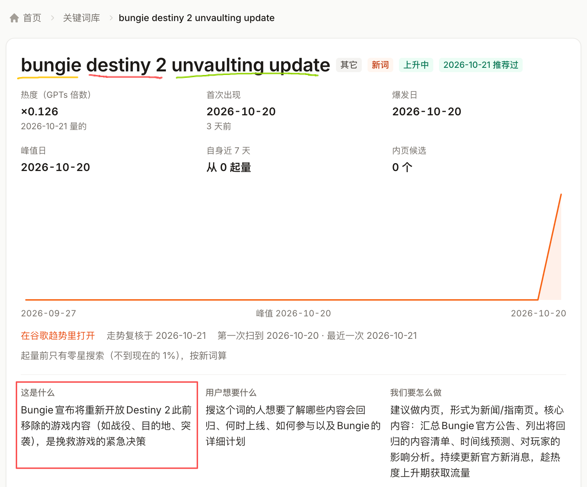
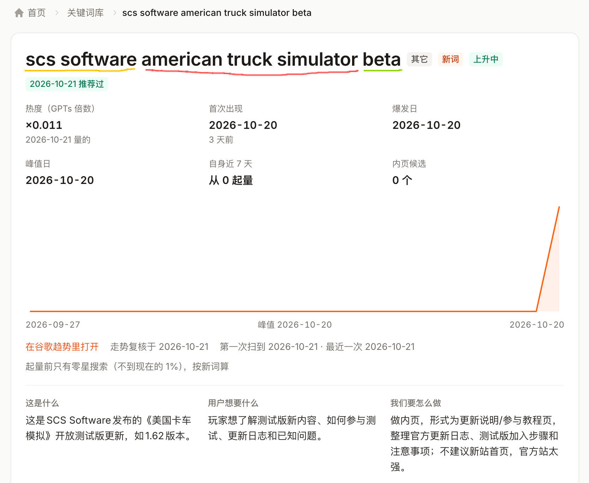
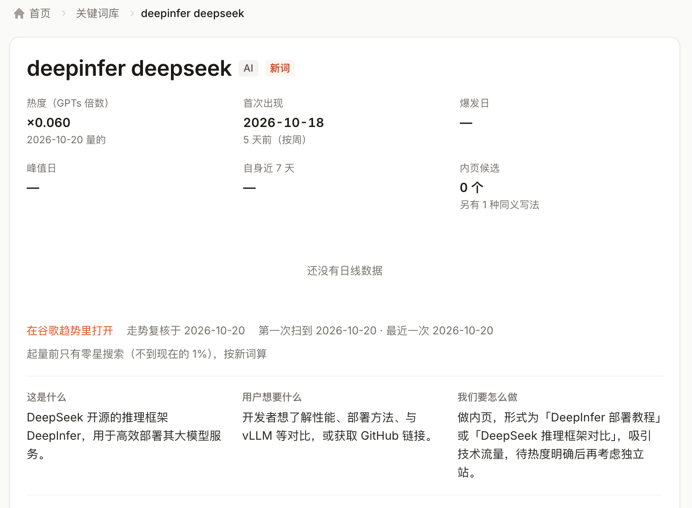

一串长关键词，往往不是一个新的搜索需求，而是多个已知实体叠在一起。处理顺序应是先拆实体，再找核心词，最后映射到现有站点的信息架构；不要一看到长词就先注册整串域名。
拆词时先回答四个问题
面对长词，不要直接判断“能不能做”，先把它还原成可以辨认的对象和需求。一个实用的检查顺序是：谁提供的、在说哪个产品、具体发生了什么、去掉这些修饰后，用户真正想查什么。
| 原始长词 | 品牌 / 公司 | 产品 | 功能 / 阶段 | 主需求 |
|---|---|---|---|---|
| bungie destiny 2 unvaulting update | Bungie | Destiny 2 | unvaulting update | Destiny 2 的回归更新 |
| scs software american truck simulator beta | SCS Software | American Truck Simulator | beta | 美国卡车模拟测试版更新 |
| deepinfer deepseek | DeepSeek | DeepInfer | — | DeepInfer 推理框架 |
示例 1：Bungie 是公司，Destiny 2 是产品
bungie 是美国游戏公司，destiny 2 是它旗下的游戏，unvaulting update 描述的是把过去从游戏中移除的内容重新放回。这里的主需求不是 Bungie，也不是 Destiny 2 本身，而是 Destiny 2 的 unvaulting update。
“Vaulting” 是 Bungie 使用的术语，指为了控制游戏体积、降低维护负担，把一部分内容从游戏中移除。理解这层背景后，才能知道用户后续会追问哪些内容会回归、何时上线、以什么方式参与。

这个例子适合说明拆词，不适合照搬成域名。更适合的落点是 Destiny 2 产品下的更新说明、时间线或指南页；分享者也明确提醒，不要注册这整串词去上站。
示例 2：SCS Software + American Truck Simulator + beta
这个长词可以拆成三段：SCS Software 是捷克游戏开发商，American Truck Simulator 是具体游戏，beta 指最近开放的测试版。每一层都对应不同的信息，因此一个游戏 Wiki 完全可以拆成多个页面，而不是把整串词塞进一个标题。
- 开发商页：收录 SCS Software 及其产品线。
- 游戏主页：围绕 American Truck Simulator 组织版本、指南与新闻。
- Beta 聚合页：集中列出各款游戏、各时间段的测试版。
- 版本详情页：承接某个 Beta 的新内容、参与方式与已知问题。

示例 3：DeepSeek 是限定词，DeepInfer 才是核心
deepinfer deepseek 里，DeepSeek 说明所属生态，DeepInfer 才是要检索的对象。若已经运营大模型相关网站，合适的做法是增加 DeepInfer 栏目或内页，围绕版本、部署、性能与对比持续整理，而不是因为前面多了一个品牌名就另起一个新站。

从关键词映射到页面结构
拆完词以后，先把它放到已有站点的哪个层级，再讨论要不要新建品牌。多数长尾词对应的是内页，而不是新域名。
| 词层 | 典型页面 | 落点判断 |
|---|---|---|
| 公司 / 开发商 | 公司介绍、产品线、历史与项目索引 | 已有垂直站可设实体页，通常不单独为一家公司建站 |
| 产品 / 游戏 / 工具 | 产品主页、文档、教程、对比与替代品 | 只有当产品及周边问题足够多时，才值得成为独立站点核心 |
| 功能 / 版本 / 事件 | 更新说明、时间线、参与指南、问题排查 | 优先作为产品下的内页，用于承接短期或阶段性需求 |
| 完整长词 | 自然语言标题、查询变体、专题聚合 | 不要机械注册整串域名；把自然语言长词作为页面标题或内容切面 |
什么情况下才值得独立上站
判断标准不是关键词有多长，而是核心实体能否持续产生一组相关问题。可以先过下面五关；任何一关不过，都应优先考虑现有站点的内页。
- 核心实体可以单独命名，并且不是只由多个已知品牌拼成的一句话。
- 除了当前这次更新，还有版本、教程、对比、使用场景等相邻需求。
- 能持续找到可核验的一手资料，并有能力做结构化整理。
- 商标、授权、内容搬运和域名混淆风险可以控制。
- 真实搜索需求与竞争程度经过数据验证，而不是只凭词看起来“很具体”。
可直接复用的拆词清单
- 圈出品牌或公司名，确认它只是来源，还是同时也是核心需求。
- 圈出产品名，判断是否需要独立主页或实体页。
- 圈出功能、版本、事件词，确认它应当挂在哪个产品下面。
- 删掉修饰词，找出用户真正搜索的主语，并补全其上下文。
- 把主需求映射到现有目录；只有形成持续的问题簇时，再评估新站与新域名。